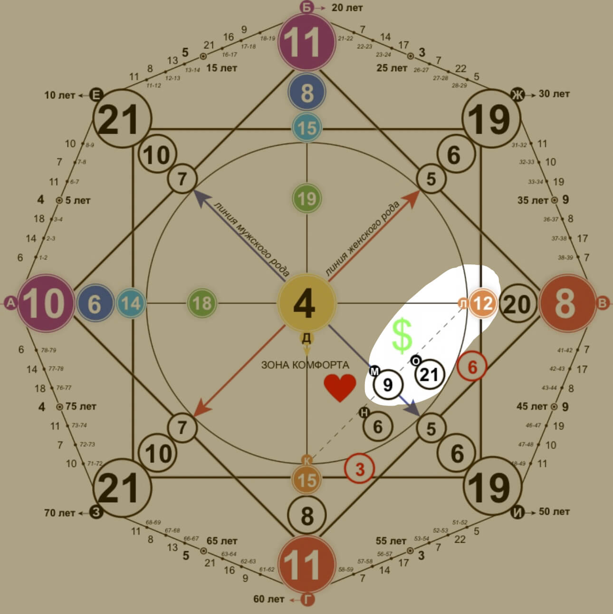

Зона финансов
Финансовый канал – расположен на линии благополучия. Показывает через что к человеку придут большие деньги, что блокирует и на что надо обязательно тратить хотя бы часть денег.
Состоит зона из трех энергий, где важным выступает центральный (21). Трактовать нужно сразу три аркана, а не заниматься всем и сразу по отдельности.
21 энергия. Мир, миротворец, глобальность.
Откуда даются финансы:
- заграница
- свой бизнес на международном уровне
- иностранные языки
- интернет-бизнес
- глобализация (пример – гипермаркет с множеством товаров)
На что надо тратить:
- отсутствие ограничивающих убеждений в голове
- на расширение /создание своего бизнеса
- расширение действующего ассортимента
- психологические тренинги, курсы по снятию блокировок в голове
Наиболее благоприятный вариант реализации:
- туристическое бюро
- работа с иностранцами
- переводчик
- журналист
- экспедитор
- любая работа через интернет
- путешественник – блогер
- работа в гипермаркетах
- участие в глобальных проектах
- все интернет-профессии
- пиар через интернет
Можно зарабатывать в любой точке мира. Нельзя реализовывать и производить товары, которые вредят здоровью человека (сигареты, алкоголь и т.д.). Подходит работа через интернет, фриланс, международные отношения
Кармические задачи:
Глобальные цели и деятельность, полезная людям. Изучение языков, путешествия. Избегайте конфликтов, любые вопросы решайте миром. Старайтесь использовать все современные технологии. Большие мечты = активные действия.
9 энергия. Отшельник, мудрец, глубинные знания.
Вашему финансовому потоку будет способствовать работа наедине, возможность сосредоточиться без отвлекающих факторов, личное пространство, кабинет.
Фриланс, где вы полностью подчинены только себе; духовные и просветительские профессии(учителя йоги и лидеры); исследования, наука и творчество.
Весьма дурно на идеи девятки влияет наличие кого-то сверху. Сам себе режиссер, актер, продюсер и оператор. Это может быть как обычный фриланс в виде копирайтинга, таргета либо же веб-дизайна на заказ, так и свое маленькое дело.
9ка и уединение это буквально синонимы, как собственно девятка и знания. Поэтому выбор очевиден - фриланс, а конкретно я бы выделила копирайтинг и все, что связано с текстом, его написанием и редактированием. Стоит отметить, что физическая работа не принесет доход, делать ставки нужно исключительно на ум.
Избегать отшельничества и аскеза. 9 энергия это абсолютный интроверт, однако лишать себя общения и закрываться в своем доме не стоит. Не прятать в себе знания. Стоит подарить свою мудрую головушку миру.
Неуверенность в себе часто поражает минусы о которых я говорила выше, тоже нужно избавляться. Особенно серьезно карается неуверенность в своих силах и возможностях.
12 энергия. Новое видение, служение
Очень творческая личность, видит мир не так, как другие. Энергия служения - сферы, где вы будете что-то отдавать людям. Именно такие люди работают в благотворительных фондах, приютах, являются социальными работниками, воспитателями и т.д.
Кармические задачи:
Ни в коем случае не впадать в состояние жертвы, научиться говорить "нет", если вы действительно не хотите это делать. Брать достойную оплату своего труда, не бояться менять сферу деятельности, если работа в ущерб себе. Помогать нуждающимся, если не деньгами, то словом и делом.
Сначала тратить на себя, потом помощь миру
Использование своего тела в работе: фитнес, йога, медитации; в данном случае спектр широкий, можно как стать тренером, так и блоггером или же замахнуться пошире и открыть бизнес. Очень и очень часто обладатели 12 одарены прекрасным голосом, а соответственно они прекрасные ораторы и вокалисты. И главное! Чем больше полезности вы приносите в мир, чем шире становится ваш карман.